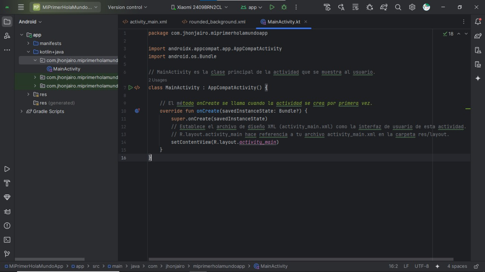
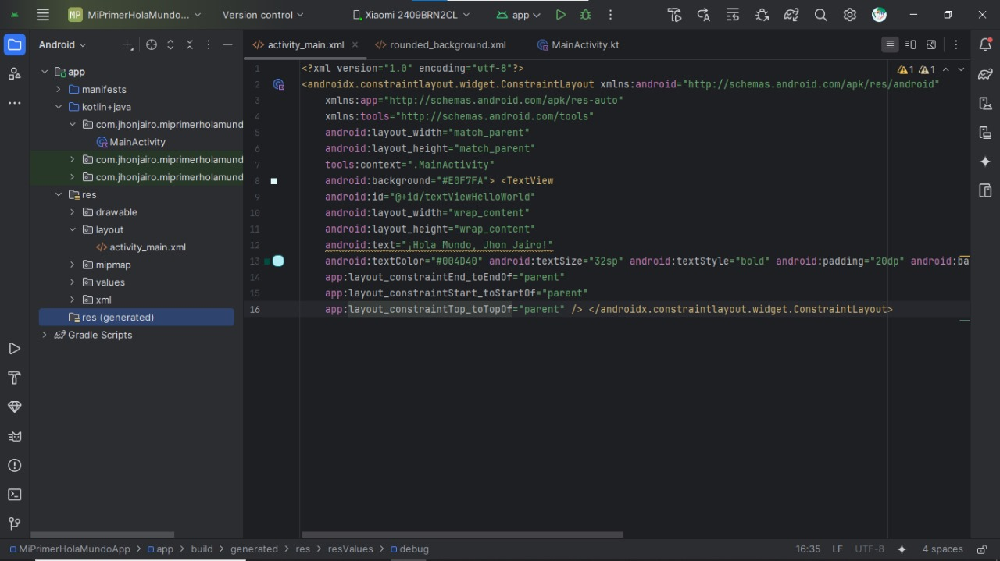
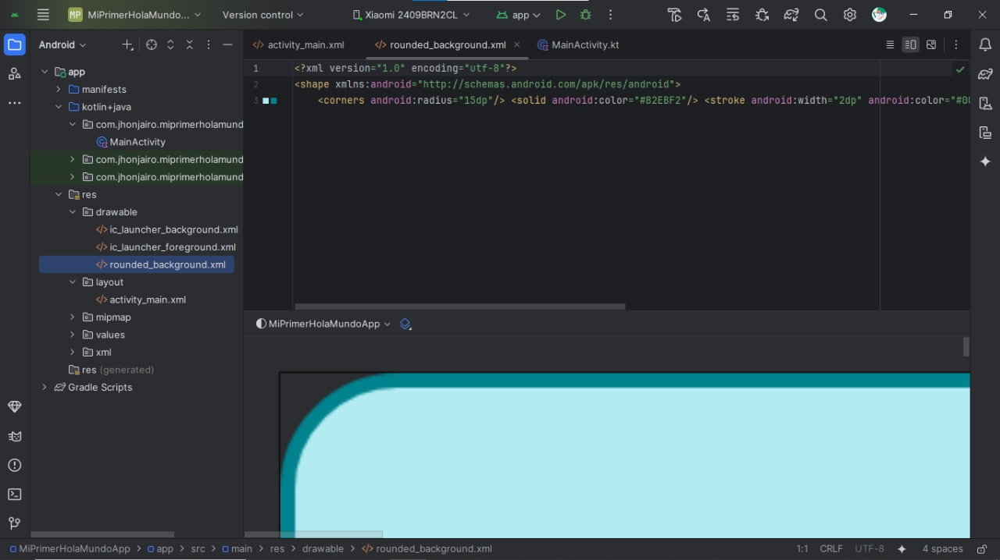
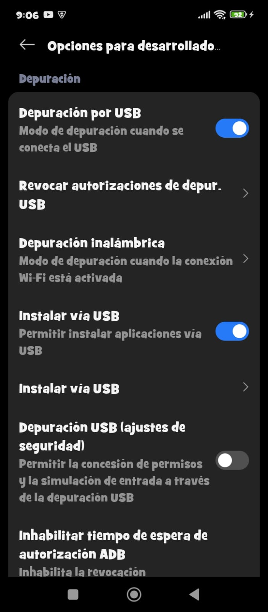
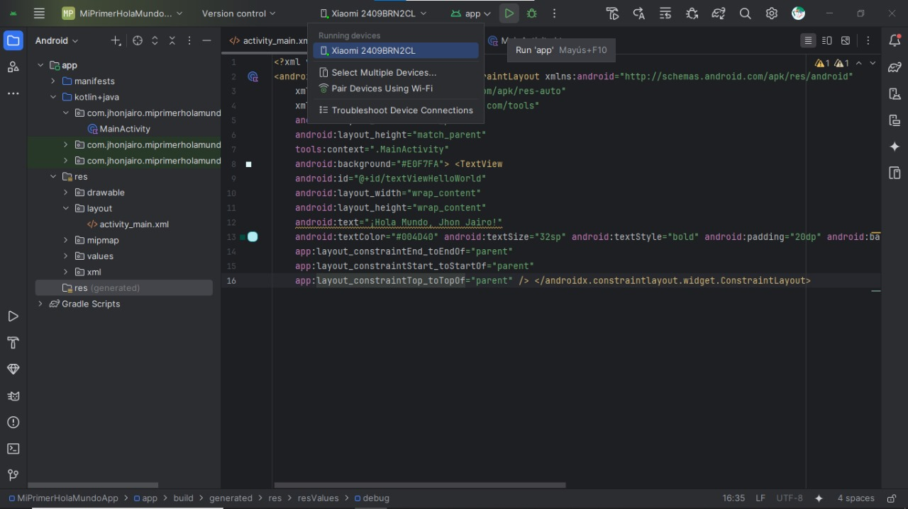
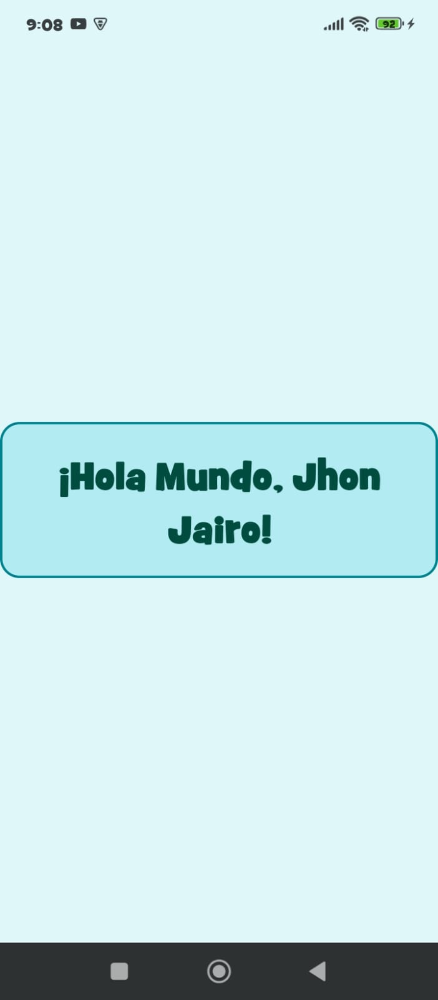

Taller: Explorando Android y Tecnologías Disruptivas 🚀
¡Bienvenidos al Taller Android Disruptivo! 💡
Prepárense para sumergirse en el fascinante mundo de Android y explorar cómo las tecnologías emergentes y disruptivas están redefiniendo el panorama del desarrollo móvil.
En este taller, desglosaremos los conceptos esenciales y fundamentales que todo entusiasta o futuro desarrollador debe conocer para construir aplicaciones innovadoras y seguras.
Datos del Aprendiz 🧑💻
Aprendiz: Jhon Jairo Mejía Ávila ✨
Programa: Análisis y Desarrollo de Software 🖥️
Ficha: 2885525 🎯
¡Espero que disfruten y aprendan mucho! Vamos a descubrir el poder de Android juntos. 🚀
¡Jhon Jairo Mejia Avila les da la bienvenida! 😊
¿Qué es Android? 🤖
Android es un sistema operativo móvil de código abierto, basado en el kernel de Linux y desarrollado por Google. Es la plataforma móvil más utilizada a nivel mundial, presente en miles de millones de teléfonos inteligentes, tabletas, televisores y más.
Su "naturaleza de código abierto" permite a los fabricantes de dispositivos modificar y personalizar el sistema, lo que ha impulsado su adopción masiva y la creación de un ecosistema diverso.
Características clave de Android:
Flexibilidad y Adaptabilidad: Se adapta a una amplia gama de dispositivos y tamaños de pantalla.
Ecosistema de Aplicaciones Gigante: Con Google Play Store y millones de aplicaciones disponibles.
Multitarea Eficiente: Permite ejecutar múltiples aplicaciones simultáneamente.
Soporte para Hardware Diverso: Compatible con cámaras, GPS, sensores, NFC, y más.
Actualizaciones Constantes: Google lanza nuevas versiones periódicamente con mejoras de seguridad y nuevas funcionalidades.
Desde la comunicación diaria hasta la productividad y el entretenimiento, Android es el **motor detrás de gran parte de nuestra vida digital**. ¡Es una plataforma increíblemente versátil y potente! ✨
Definición del Concepto de APK 📦
El término "APK" significa "Android Package Kit" en inglés. Es el formato de archivo de paquete estándar utilizado por el sistema operativo Android para la distribución e instalación de aplicaciones móviles. Piensa en un archivo APK como el equivalente a un archivo `.exe` en Windows o un `.dmg` en macOS, pero para el mundo Android.
Cada archivo APK es un paquete comprimido que contiene todos los elementos necesarios para que una aplicación se instale y funcione correctamente en un dispositivo Android. Esto incluye:
Código compilado de la aplicación: Los archivos `.dex` (Dalvik Executable) que contienen el código ejecutable.
Recursos: Imágenes, sonidos, archivos de diseño XML para la interfaz de usuario, y otros activos.
Certificado de manifiesto: Un archivo `AndroidManifest.xml` que describe la estructura de la aplicación, sus componentes, permisos requeridos, y más.
Archivos de recursos y activos adicionales.
Cuando descargas una aplicación desde Google Play Store o desde una fuente externa (sideloading), lo que tu dispositivo instala es, en última instancia, un archivo APK. ¡Es la unidad fundamental para empaquetar y desplegar aplicaciones Android! 🚀
¿Qué es el Android SDK? 🛠️
El "Android SDK (Software Development Kit)" o "Kit de Desarrollo de Android", es un conjunto exhaustivo de herramientas y bibliotecas que Google proporciona a los desarrolladores. Es absolutamente esencial para construir, depurar y probar aplicaciones para la plataforma Android.
Sin el SDK, el desarrollo de aplicaciones nativas de Android sería extremadamente complejo o casi imposible. Incluye varios componentes cruciales:
Herramientas de Construcción (Build Tools): Utilidades para compilar tu código en archivos APK, empaquetar recursos y firmar la aplicación.
Plataformas Android (Android Platforms): Versiones específicas de la API de Android que te permiten desarrollar para diferentes niveles del sistema operativo.
Emulador de Android: Un entorno virtual que simula dispositivos Android, permitiéndote probar tus aplicaciones en una variedad de configuraciones de hardware y versiones de Android sin necesidad de un dispositivo físico.
SDK Tools: Herramientas de depuración, gestión de dispositivos, y otras utilidades para optimizar tu flujo de trabajo.
Documentación y Ejemplos: Guías detalladas, referencias de API y ejemplos de código para ayudar a los desarrolladores.
Piensa en el Android SDK como la "caja de herramientas completa" que te equipa con todo lo necesario para dar vida a tus ideas de aplicaciones Android, desde el concepto hasta la implementación y las pruebas. ¡Es tu compañero indispensable en el viaje del desarrollo móvil! ⚙️
Lenguaje para Desarrollo de Aplicaciones Android ✍️
Históricamente, el lenguaje principal para desarrollar aplicaciones Android fue "Java". Sin embargo, en 2019, Google anunció que "Kotlin" se convertiría en el lenguaje preferido y el lenguaje primario para el desarrollo de aplicaciones Android.
Ambos lenguajes son completamente compatibles y se utilizan ampliamente en el ecosistema Android, y la mayoría de los desarrolladores trabajan con ambos:
Java: Un lenguaje de programación orientado a objetos, robusto, maduro y con una vasta comunidad. Es la base de muchas aplicaciones Android existentes y sigue siendo muy relevante. Su sintaxis puede ser más verbosa.
Kotlin: Un lenguaje moderno, conciso y pragmático que también se ejecuta en la Máquina Virtual de Java (JVM). Kotlin está diseñado para ser interoperable con Java y ofrece características que mejoran la productividad, como seguridad nula (para evitar errores `NullPointerException`), expresiones más concisas y soporte para programación funcional.
Mientras que "Kotlin es la elección recomendada" por Google para los nuevos proyectos debido a sus beneficios en productividad y seguridad, conocer Java sigue siendo valioso, especialmente para mantener o expandir aplicaciones heredadas. ¡La elección entre ellos (o la combinación de ambos) dependerá de las necesidades del proyecto! 🌟
IDEs de Desarrollo para Android 💻
Un "IDE (Integrated Development Environment)" o "Entorno de Desarrollo Integrado", es una aplicación de software que proporciona un conjunto integral de herramientas a los programadores para el desarrollo de software. Para el desarrollo de aplicaciones Android, el IDE más prominente y recomendado es:
Android Studio:
Es el "IDE oficial de Google" para el desarrollo de aplicaciones Android. Está basado en la plataforma IntelliJ IDEA y ofrece una amplia gama de características diseñadas específicamente para el ecosistema Android.
Características destacadas:
Editor de Código Inteligente: Con autocompletado avanzado, refactorización y análisis estático.
Diseñador de Diseño Visual (Layout Editor): Permite construir interfaces de usuario arrastrando y soltando elementos.
Emulador de Android Integrado: Para probar aplicaciones en una variedad de configuraciones de dispositivos.
Herramientas de Depuración y Rendimiento: Para identificar y solucionar problemas en el código y optimizar el rendimiento de la aplicación.
Integración con Gradle: El sistema de compilación oficial para Android.
Soporte nativo para Kotlin y Java.
Aunque Android Studio es el estándar de la industria, algunos desarrolladores pueden usar otros entornos para el desarrollo móvil híbrido o multiplataforma que también puede apuntar a Android:
Visual Studio Code: Con extensiones como Flutter o React Native, se puede desarrollar aplicaciones Android, aunque no son nativas de Android per se.
IntelliJ IDEA (Community Edition): Aunque es la base de Android Studio, no incluye todas las herramientas específicas de Android de forma predeterminada.
Para un desarrollo Android nativo y profesional, "Android Studio es la elección indiscutible" y la herramienta con la que pasarás la mayor parte de tu tiempo. 🚀
Android Multiusuario: Compartiendo con Seguridad 👨👩👧👦
El concepto de "Android Multiusuario" permite que múltiples personas compartan un mismo dispositivo Android, como un teléfono o una tableta, mientras mantienen sus propias configuraciones, datos y aplicaciones de forma separada y segura. Esta característica es increíblemente útil en entornos compartidos, como familias, escuelas o empresas.
Cada usuario en un dispositivo Android multiusuario tiene su propio espacio de trabajo, lo que significa que:
Aplicaciones: Las aplicaciones instaladas por un usuario no son visibles por defecto para otros usuarios, y sus datos de aplicación son independientes.
Datos Personales: Documentos, fotos, videos, contactos y mensajes son privados para cada perfil de usuario.
Cuentas: Las cuentas de Google y otras cuentas de aplicaciones están vinculadas a cada perfil individualmente, no al dispositivo globalmente.
Configuraciones: Cada usuario puede personalizar su fondo de pantalla, idioma, ajustes de red, etc., sin afectar a los demás.
Tipos Comunes de Usuarios:
Propietario: Es el usuario principal del dispositivo, con control total sobre este y la capacidad de añadir o eliminar otros usuarios.
Invitado: Un perfil temporal ideal para uso ocasional. Los datos de la sesión de invitado se pueden borrar fácilmente al finalizar.
Usuarios Estándar: Perfiles permanentes para personas que usarán el dispositivo con regularidad, como miembros de la familia.
Usuarios Restringidos (en tabletas): Permiten al propietario limitar el acceso a ciertas aplicaciones o contenidos, ideal para niños o quioscos.
Esta funcionalidad mejora significativamente la "privacidad y la organización" de dispositivos Android, permitiendo que un solo dispositivo sirva a las necesidades individuales de múltiples personas de manera eficiente. 🌐
Concepto de Mínimo Privilegio en Android 🛡️
El principio de "Mínimo Privilegio" (Least Privilege), es una piedra angular de la seguridad informática, y su aplicación es fundamental en el diseño de Android. Este concepto dicta que a cualquier entidad (un usuario, un proceso, o en nuestro caso, una aplicación) se le deben otorgar solo los permisos y recursos mínimos indispensables para realizar su función designada, y nada más.
En el contexto de Android, esto se manifiesta de varias maneras:
Permisos de Aplicación: Las aplicaciones deben solicitar solo aquellos permisos que son estrictamente necesarios para su operación. Por ejemplo, una aplicación de calculadora no debería pedir permiso para acceder a tus contactos o tu ubicación. Los usuarios tienen la capacidad de otorgar o denegar estos permisos en tiempo de ejecución (a partir de Android 6.0 Marshmallow).
Sandboxing de Aplicaciones: Android aísla cada aplicación en su propio "sandbox" de seguridad. Cada aplicación se ejecuta con su propio ID de usuario (UID) de Linux y su propio proceso, lo que significa que una aplicación no puede, por defecto, acceder a los datos o recursos de otra aplicación. Esto previene que una aplicación maliciosa cause daño a otras partes del sistema o robe información de otras apps.
Acceso Limitado a Recursos del Sistema: Las aplicaciones no tienen acceso irrestricto al sistema operativo o al hardware del dispositivo. Cualquier interacción con funciones sensibles (como la cámara, el micrófono, el GPS o la conectividad de red) requiere un permiso explícito.
Los beneficios de aplicar el principio de mínimo privilegio en Android son significativos:
Seguridad Mejorada: Reduce la superficie de ataque y limita el daño potencial si una aplicación es comprometida o contiene vulnerabilidades.
Protección de la Privacidad: Salvaguarda la información sensible del usuario al restringir el acceso no autorizado.
Estabilidad del Sistema: Evita que las aplicaciones mal diseñadas o maliciosas interfieran con el funcionamiento de otras aplicaciones o del propio sistema operativo.
Es un principio clave para mantener la robustez y la confianza en la plataforma Android. ¡Menos es más cuando se trata de permisos y seguridad! 🔐
Componentes Esenciales de una Aplicación Android 🧩
Las aplicaciones Android están construidas sobre bloques de construcción fundamentales, conocidos como **componentes esenciales**. Cada tipo de componente tiene un propósito específico y un ciclo de vida definido que es gestionado por el sistema operativo Android. Comprenderlos es crucial para diseñar y construir aplicaciones robustas.
Los cuatro componentes principales son:
Activities (Actividades):
Una "Activity" representa una única pantalla con una interfaz de usuario con la que el usuario puede interactuar. Es el punto de entrada más común para el usuario a una aplicación. Por ejemplo, una pantalla de inicio de sesión, la visualización de una lista de contactos o la ventana de redacción de un correo electrónico son Activities. Una aplicación suele tener múltiples Activities, y el usuario puede navegar entre ellas. 📱
Services (Servicios):
Un "Service" es un componente que se ejecuta en segundo plano para realizar operaciones de larga duración sin proporcionar una interfaz de usuario. Son ideales para tareas que no requieren interacción directa del usuario, como reproducir música en segundo plano, descargar datos de la red o realizar operaciones de base de datos. Los servicios pueden continuar ejecutándose incluso si el usuario cambia a otra aplicación. 🎶
Broadcast Receivers (Receptores de Difusión):
Un "Broadcast Receiver" es un componente que permite a la aplicación responder a mensajes de difusión (broadcasts) enviados por el sistema Android o por otras aplicaciones. Estos mensajes pueden indicar eventos del sistema, como batería baja, SMS recibido, una llamada entrante o un cambio en la conectividad de la red. Los Broadcast Receivers no tienen interfaz de usuario. 📡
Content Providers (Proveedores de Contenido):
Un "Content Provider" gestiona el acceso a un conjunto estructurado de datos. Proporciona una forma segura y estandarizada para que diferentes aplicaciones puedan acceder a datos compartidos entre ellas o persistir datos propios. Por ejemplo, la aplicación de Contactos de Android expone sus datos a través de un Content Provider, permitiendo que otras aplicaciones accedan (con el permiso adecuado) a la lista de contactos del usuario. 💾
Estos componentes son los "ladrillos" que los desarrolladores ensamblan para construir la funcionalidad completa de una aplicación Android. ¡Saber cómo y cuándo usarlos es clave para el desarrollo exitoso! 🏗️
Demostración: Mi Primera App "Hola Mundo" 📱
Para complementar los conceptos teóricos, hemos creado una sencilla aplicación "Hola Mundo" en Android Studio y la hemos ejecutado en un dispositivo físico. Aquí te mostramos el proceso y el resultado.
1. Código Kotlin de la Actividad Principal (`MainActivity.kt`)
Este es el cerebro de nuestra pantalla, donde se define el comportamiento.

Código Kotlin de `MainActivity.kt`.
2. Layout XML de la Interfaz (`activity_main.xml`)
Así es como se define visualmente la interfaz de usuario, incluyendo el mensaje "Hola Mundo".

Layout XML de `activity_main.xml` con la previsualización.
3. Archivo Drawable XML (`rounded_background.xml`)
Este archivo XML define el estilo visual que le da un fondo redondeado y colores específicos a nuestro texto.

Definición del estilo `rounded_background.xml`.
4. Habilitación de Opciones de Desarrollador y Depuración USB
Para que Android Studio pueda instalar la app en tu teléfono, es fundamental activar estas opciones de seguridad y desarrollo en la configuración del dispositivo.

Opciones de Desarrollador con Depuración USB activada.
5. Conexión del Dispositivo en Android Studio
Una vez que el teléfono está configurado y conectado, Android Studio lo detecta y lo muestra como un objetivo de ejecución.

Teléfono conectado y listo para ejecutar la app en Android Studio.
6. ¡App "Hola Mundo" en Acción!
Finalmente, la aplicación ejecutándose en un dispositivo Android real, mostrando nuestro mensaje personalizado y centrado.

La app "Mi Primer Hola Mundo" funcionando en el teléfono.
¡Esperamos que esta demostración práctica te haya dado una idea clara de cómo se ve el desarrollo y ejecución de una aplicación Android básica! 🎉